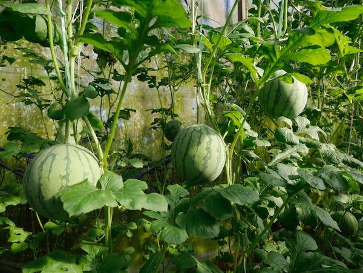
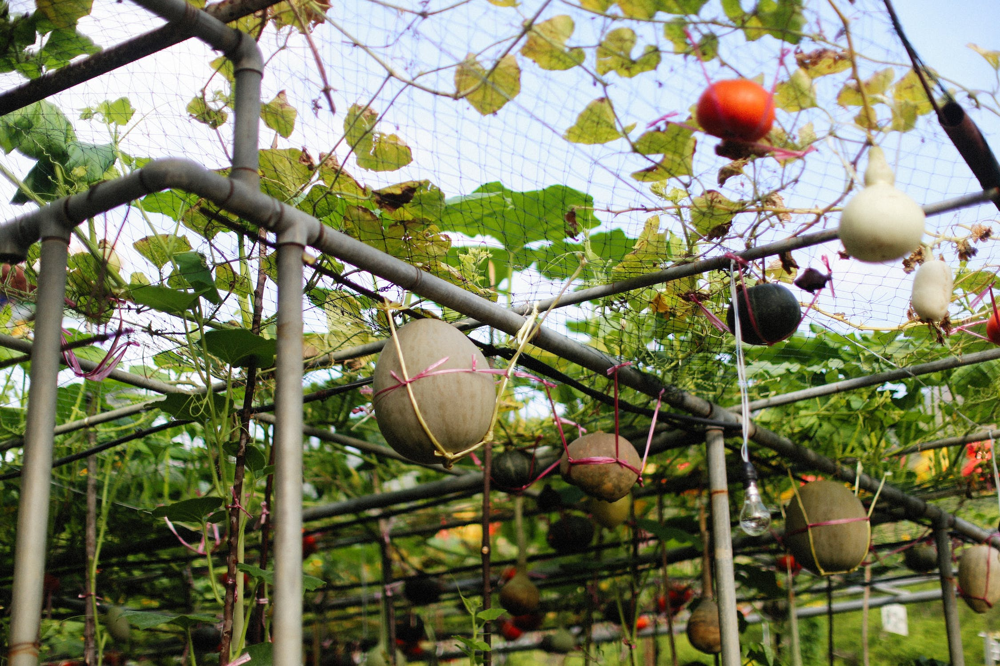
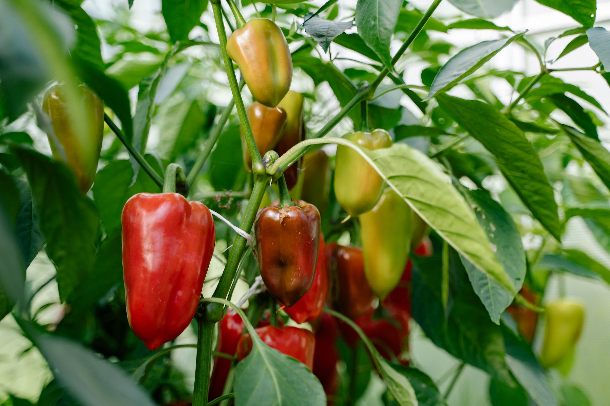
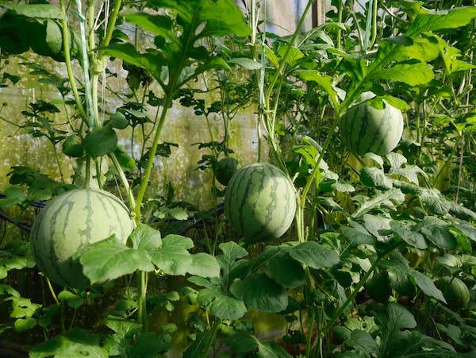
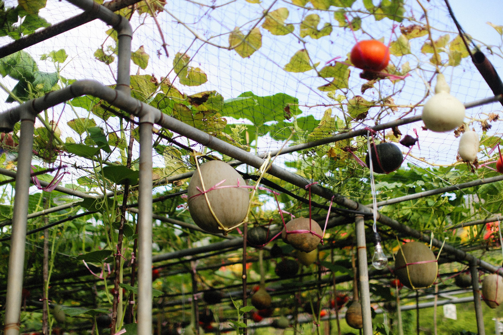
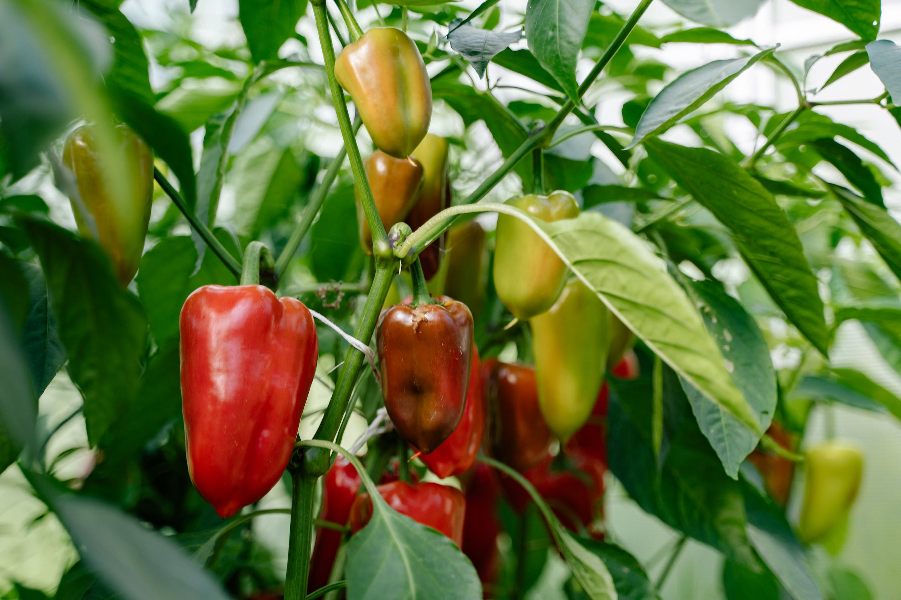

Your rooftop farm can provide you nutritious food throughout the year. A wide range of
fruits
and
vegetables like spinach, cucurbits, cauliflower, citrus, tomatoes, garlic, onions, guava,
strawberries,
and
spices can be grown on vacant spaces on the rooftops. It could cut down
your grocery bills by a
significant amount,
depending on how much you can produce.
The food that we source from markets and grocery stores are usually grown with the help of chemical fertilizers. This chemical then seeps into your food system and can eventually lead to health hazards. Growing your own food will help you ensure the good quality of food that you consume on the daily basis.
Building a terrace garden helps in keeping your home cool, it is great for the people living in tropical areas. All the plants growing on your terrace will create a micro-environment and will lower the temperature of the place. So while you enjoy the wholesome home-grown food you also save up on big bills from ACs.
By building a garden at your home you will help the environment and reduce your carbon footprint. The plants that you grow will improve air quality. Farming done using chemical materials deteriorates the soil quality and pollutes air and water.
Having your terrace garden gives you access to nature 24*7. As they say, “Nature is man’s best friend”. It keeps you disconnected from all the stress and chaos of the world. Having your own terrace garden means having access to your peaceful corner at all times.
Gardening is always a great exercise, the number of efforts you will put into maintaining your garden will help you stay fit and active. Taking care of your plants, watering them, and other activities will keep you physically active and away from your everyday boring exercising routine.

Healthy soil leads to healthy plants! Soil that is properly nourished and conditioned is the
key to growing
proper plants. Create your potting mixture by mixing soil
with organic compost. The ideal soil for your
terrace
garden should neither be too compacted nor too light. The soil should have a balanced texture, crumbly
soil
that
can retain the moisture is good for the plants.
Feed your soil with organic compost regularly. The important nutrients can get washed away
from your rooftop
garden soil with the rains. Therefore, it is necessary to
fertilize them for a good yield. Avoid using
chemical
fertilizers as it will not only seep into your system but it will also harm the good bacterias and microbes in
your soil.
Prepare your potting mix by taking equal portions of red sand, organic compost, and coco
peat.
Mix it well and
leave your potting mix to settle a week or two before
using it in containers. Ensure that the texture of
your
potting mixture is balanced. To keep your soil healthy, you can keep fertilizing it every now and then.
This
in
turn will keep your greens healthy. Here’s how to prepare organic fertilizers at home.

If you are planning to build soil patches and raised beds on your terrace then it’s
important to start with
waterproofing.
It will help you to prevent any potential damage to the building. Waterproofing can be
easily
done and the great thing
is that it’s only a one-time job.Waterproofing is an important step in the
process
of
building a terrace garden. It’s like
laying the foundation of the building before you start constructing.
Leakages and roof damage can get difficult to
manage for the people living in and around the building.
Waterproofing can be done in various ways, one of the
effective ways to waterproof your roof is by the
application of polymer coating on the concrete slab. Once the coating
is done, you can get started with
your terrace garden.

Analyze the hours of the sunlight your balcony receives and the areas that get the
maximum
amount of sunlight.
Pick your plants and
place them in the spots that receive ample sunlight.If your balcony is shady, you can
pick out
the plants that can thrive in lesser
sunlight. Notice the hours of indirect sunlight coming to your
balcony
and pick your plants accordingly.All salad greens like
arugula,
lettuce, spinach, mustard, chard, kale, mizuna, komatsuna can do well in partial
shade but all these plants need some
amount of sunlight every day to thrive.
 




